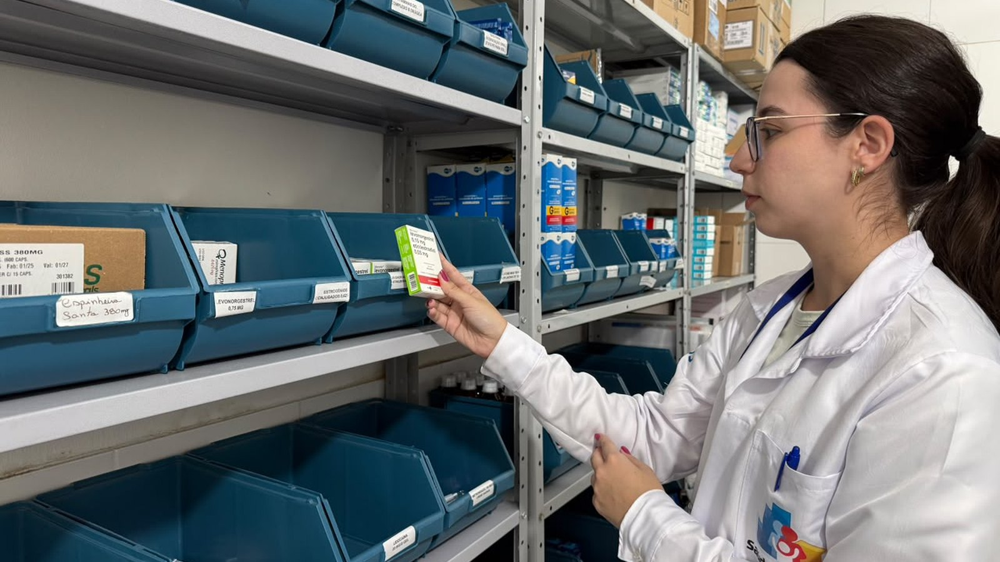

Itapema · Saúde
Itapema · SaúdeO Saúde 24h de Itapema chegou a 1.064 atendimentos, e 792 foram só em setembro, 26 por dia
Outro número da saúde municipal que a Prefeitura divulgou sem série.
A Prefeitura anunciou na quinta-feira que a Central de Abastecimento Farmacêutico tem agora todos os medicamentos do elenco municipal. Fomos atrás da nota anterior com percentual e montamos a conta: o índice era de 95% em 30 de maio de 2025, e entre as duas publicações passaram 496 dias. Baixamos também a REMUME que está no site da Prefeitura, a lista que diz quais remédios o município entrega de graça, e é a 5ª edição, com "Construção 2023" na capa. Os seis remédios que a nota de 2025 dava como reabastecidos estão todos nela.
Em 30 segundos · Modo de Leitura, formato original Santa Informa
A Prefeitura de Itapema deu uma notícia boa.
O estoque de remédio do município chegou a 100%.
O anúncio saiu na quinta-feira, 8 de outubro.
Quem guarda esses remédios é a CAF.
CAF é a Central de Abastecimento Farmacêutico.
Ela recebe, guarda e distribui o remédio da rede.
Os 100% valem só para o elenco municipal.
Ou seja, o que é obrigação da cidade comprar.
A nota anterior com percentual é de 2025.
Foi em 30 de maio de 2025, com 95%.
Entre as duas passaram 496 dias, conta nossa.
São as duas únicas notas com número.
Os pontos de partida não batem.
A nota de agora fala em 64% no começo.
A de 2025 falava em cerca de 70%.
Nenhuma das duas diz a data desse começo.
Fomos ver a lista do que a cidade entrega.
Ela se chama REMUME.
É a Relação Municipal de Medicamentos Essenciais.
Baixamos o arquivo que está no site da Prefeitura.
É a 5ª edição, com "Construção 2023" na capa.
São 17 páginas de PDF.
Contamos 25 grupos de remédio municipal.
Vai de analgésico a remédio de diabetes.
Tem ainda uma parte com programas do estado.
A cidade já avisou falta de remédio duas vezes.
A primeira foi em 9 de novembro de 2018.
Faltavam clonazepam, fenobarbital e ácido valproico.
A segunda veio junto com a nota dos 95%.
Ali seis remédios tinham voltado ao estoque.
Fenitoína, fenobarbital e valsartana.
Olmesartana, gliclazida e carbonato de lítio.
Conferimos os nove na REMUME de 2023.
Todos estão na lista.
O fenobarbital aparece nas duas faltas.
Entre uma e outra passaram 2.394 dias.
São três farmácias municipais na cidade.
UBS Centro, Unidade Morretes e UBS Meia Praia I.
Abrem de segunda a sexta.
Das 8h às 12h e das 13h às 17h.
Leve receita, documento com foto e cartão do SUS.
A receita vale 6 meses.
Para antibiótico, vale 10 dias.
Poder PúblicoPublicada em Redação Santa Informa

A Prefeitura de Itapema anunciou na quinta-feira, 8 de outubro, que a Central de Abastecimento Farmacêutico, a CAF, chegou a 100% de abastecimento dos medicamentos cuja compra é responsabilidade do município. A vez anterior em que a Prefeitura publicou esse índice foi em 30 de maio de 2025, quando ele estava em 95%. Entre uma nota e outra passaram 496 dias, conta nossa. E a lista que diz quais são esses remédios, a REMUME, está no site da Prefeitura na 5ª edição, com "Construção 2023" escrito na capa.
A CAF é o estoque central: recebe o remédio do fornecedor, guarda e distribui para as unidades de saúde. O índice mede quantos itens do elenco municipal estão disponíveis ali. A Diretora de Assistência Farmacêutica, Amanda Biasi, disse que chegar aos 100% exigiu "acompanhamento diário dos estoques, planejamento das compras e atuação da equipe". A própria nota avisa que o número oscila conforme a procura e a entrega do fornecedor.
As duas notas contam a mesma história de recuperação, mas começam em lugares diferentes. A de quinta diz que o abastecimento "estava em 64%" no início do trabalho de reorganização dos estoques. A de maio de 2025 dizia que o índice era de "aproximadamente 70%" no início daquele ano. São duas marcas oficiais para o mesmo começo, e nenhuma das duas traz a data a que se refere.
Fomos à página de serviços da Prefeitura e baixamos o arquivo que abre em "REMUME". São 17 páginas. Na capa, "Relação Municipal de Medicamentos Essenciais de Itapema-SC, 5ª edição" e, logo abaixo, "Construção 2023". Contamos 25 grupos terapêuticos de medicamento municipal, de analgésico a remédio de diabetes, mais uma seção com os programas que o estado financia. É esse o elenco de que fala o anúncio dos 100%.
A Prefeitura registrou falta de remédio duas vezes. Em 9 de novembro de 2018, uma nota avisou que clonazepam 2 mg, fenobarbital 40 mg/mL e ácido valproico xarope estavam em falta temporária, por falta do princípio ativo. Em 30 de maio de 2025, a nota dos 95% listou seis que tinham voltado ao estoque: fenitoína, fenobarbital, valsartana, olmesartana, gliclazida e carbonato de lítio. Conferimos os nove na REMUME de 2023 e todos estão lá. O fenobarbital aparece nas duas, com 2.394 dias entre elas, conta nossa.
Três farmácias municipais entregam uso contínuo, antibiótico e controlado: UBS Centro, na Avenida Governador Celso Ramos, 534; Unidade Morretes, na Rua 424, 1.249; e UBS Meia Praia I, na Rua 252, 688. Abrem de segunda a sexta, das 8h às 12h e das 13h às 17h. Leve receita original de no máximo 6 meses, ou de 10 dias para antibiótico, documento com foto e o Cartão Nacional do SUS.
O resumo de 30 segundos está no topo e a versão completa é o texto acima. Aqui ficam as três leituras da casa sobre o mesmo assunto.
Clara, a otimista
Quem toma remédio todo dia sabe o tamanho dessa notícia. Chegar na farmácia e ouvir que o seu não chegou é o tipo de coisa que estraga o mês, porque remédio de pressão, de diabetes ou de epilepsia não espera a próxima entrega. Sair de 64% para 100% quer dizer que, nesta semana, quem for à UBS Centro, à Unidade Morretes ou à Meia Praia I tem o que procura na prateleira.
E tem o jeito como isso foi feito, que é o menos glamouroso possível: conferir estoque todo dia, programar compra, correr atrás de fornecedor. Não tem inauguração nem corte de fita. É trabalho de bastidor que só aparece quando funciona, e agora apareceu. Se o seu remédio está na lista da REMUME, vale levar a receita, o documento e o cartão do SUS e resolver.
Seu Prudêncio, o criterioso
Merece atenção a lista. O anúncio fala em 100% do elenco municipal, e o elenco que o morador consegue abrir no site é a 5ª edição, com "Construção 2023" na capa. Pode ser que a lista interna já esteja mais nova e só a publicação tenha ficado para trás, o que é comum. Mas quem quer conferir se o seu remédio entra na conta dos 100% só tem o documento de 2023 para olhar. Uma sugestão útil é publicar a edição vigente com a data da revisão.
O ponto de partida também pede olho. A nota deste mês diz 64%, a de 2025 diz cerca de 70%, e nenhuma das duas marca a data. Não é contradição grave, é imprecisão de divulgação, mas atrapalha quem tenta acompanhar a série. Vale acompanhar se o próximo balanço vem com data e com periodicidade definida, porque duas medições em 496 dias não formam série.
Dito isso, o resultado é bom e precisa ser dito assim. Regularizar estoque de farmácia municipal é tarefa chata, cara e sem foto bonita, e depende de acertar compra, prazo e armazenagem ao mesmo tempo. Se a CAF está entregando todos os itens de responsabilidade do município, a Secretaria de Saúde fez o trabalho. A ressalva aqui é de prestação de contas, não de execução.
Caco, o sarcástico
O estoque está em 100%, e eu fui conferir qual é a lista desses 100%. Abri o site, cliquei em REMUME e baixei um PDF de 2023. Três anos de idade. Se o remédio for de 2024 para cá, boa sorte na adivinhação, porque o documento oficial ainda não soube.
Reclamação registrada: a nota deste mês diz que começamos em 64% e a de 2025 dizia cerca de 70%. Seis pontos sumiram no caminho e ninguém explicou. Também não tem data em nenhum dos dois, então começamos em algum lugar, num certo momento, e chegamos aqui. É quase poesia.
Mas tá bom porque funciona. Se o remédio está na prateleira, de graça, a cinco minutos de casa, eu paro de implicar com a capa do PDF. Reclamar de uma farmácia abastecida é um luxo que a gente não tinha em 2018, quando a Prefeitura publicava nota para avisar que o remédio acabou.
Fontes: os 100% de abastecimento, o ponto de partida de 64%, a função da CAF, a fala da Diretora de Assistência Farmacêutica Amanda Biasi e o aviso de que o índice pode oscilar estão na nota Abastecimento de medicamentos municipais chega a 100% em Itapema, publicada pela Prefeitura de Itapema em 8 de outubro de 2026. Os 95% de 30 de maio de 2025, o ponto de partida de aproximadamente 70% e a lista dos seis remédios reabastecidos (fenitoína, fenobarbital, valsartana, olmesartana, gliclazida e carbonato de lítio) estão em CAF de Itapema atinge 95% de abastecimento de medicamentos, de 30 de maio de 2025. A falta de clonazepam 2 mg, fenobarbital 40 mg/mL e ácido valproico xarope está em NOTA, falta temporária de medicamentos, de 9 de novembro de 2018. A edição da lista, as 17 páginas, os 25 grupos terapêuticos e a presença dos nove remédios citados saíram do arquivo da Relação Municipal de Medicamentos Essenciais de Itapema, 5ª edição, que abre na página de serviços da Prefeitura. Baixamos e lemos o PDF inteiro em 11 de outubro de 2026 e conferimos um a um os nove remédios. Os endereços das três farmácias municipais, o horário e os documentos exigidos estão em Farmácia Municipal de Itapema garante acesso gratuito a medicamentos, de 28 de julho de 2025, e os endereços conferem com os da última página da REMUME. Os 496 dias e os 2.394 dias são contas nossas sobre as datas dessas notas.
Itapema · SaúdeOutro número da saúde municipal que a Prefeitura divulgou sem série.
 Itapema · Saúde
Itapema · SaúdeO outro braço da saúde de urgência da cidade.
 Itapema · Serviço
Itapema · ServiçoO sábado que leva vacina e atendimento de saúde para dentro do bairro.